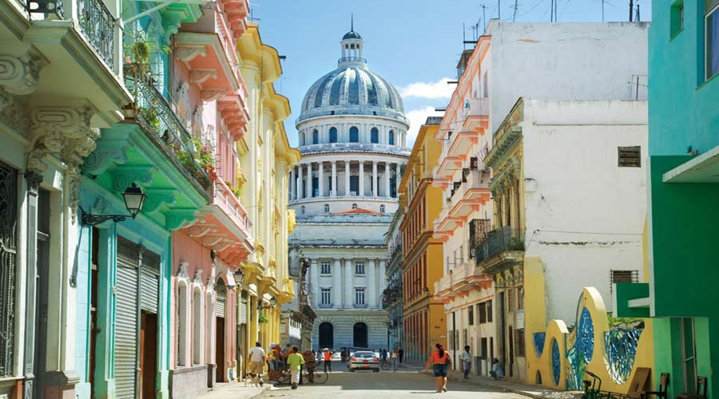
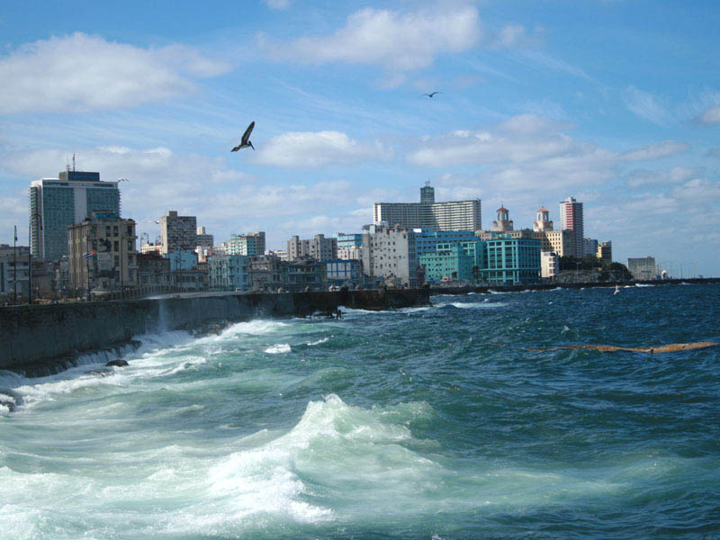
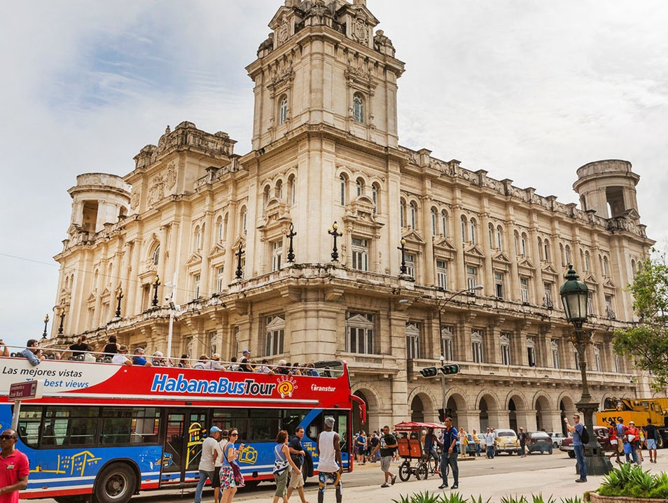
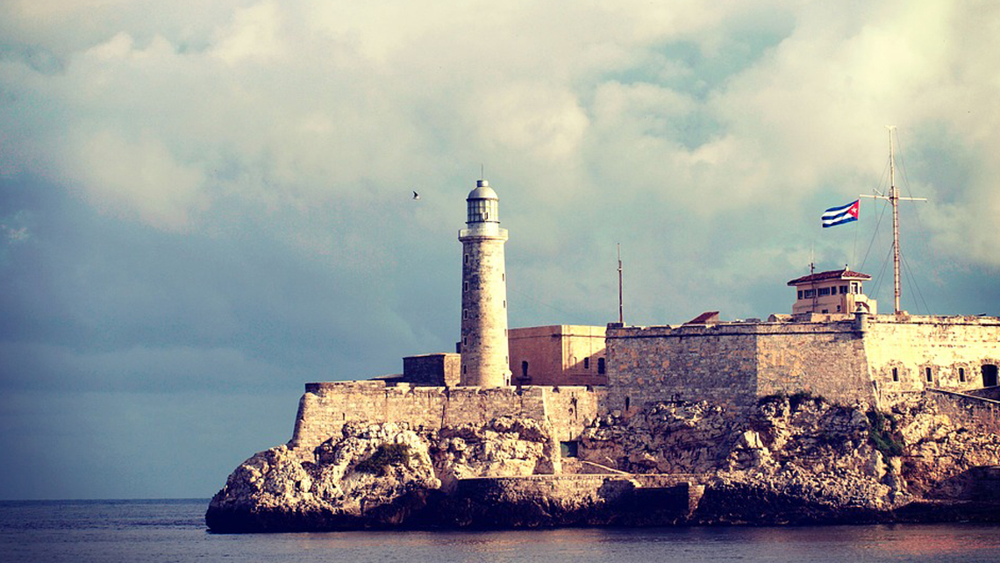
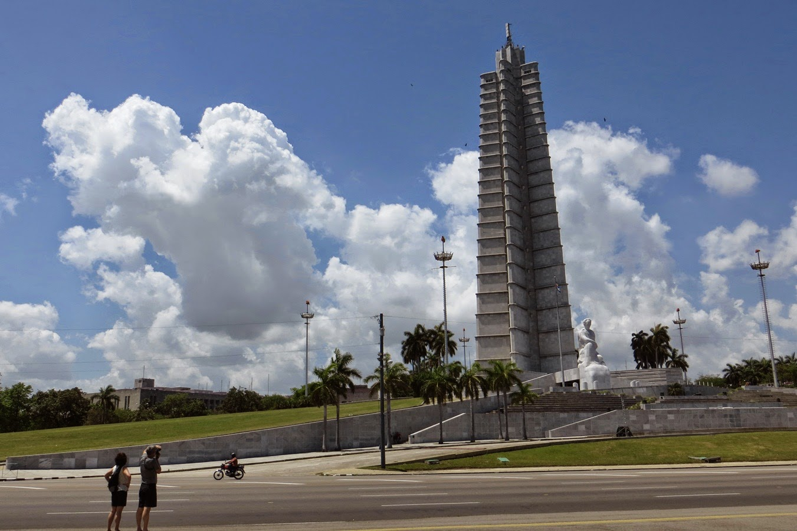

Havana - Kuba

Stara Havana
Stara Havana (La Habana Vieja) je jezgra izvornog grada Havane koja predstavlja najbogatiju zbirku kolonijalne arhitekture Latinske Amerike. Lokacija starih gradskih zidina sopasana je međama Stare Havane u kojoj se nalazi oko 3000 povijesnih zgrada. Uvrštena na UNESCO-v popis mjesta svjetske baštine u Americi 1982. godine Stara Havana, sa svojim uskim ulicama i stršećim balkonima, tradicionalna je rezidencijalna zona, kao i središte jednog dijela trgovina i industrije zabave.

Melcon
Osmišljen 1901. godine i djelomično izgrađen 1902. i dalje, Malecon je poznatošetalište uz obalu Havane. Uz put, naći ćete asortiman dobro očuvanih zgrada 20. stoljeća koji predstavljaju mješavinu arhitektonskih stilova, uključujući Art Deco i Neo maurske. Obojene u pastelnim zrncima i žutima, zgrade su veselje fotografa, posebno u zlatnom sjaju sumraka. Promatranje ljudi ovdje je omiljena zabava. Mladi ljubavnici uživaju u ruci, lokalni ribari bacaju svoje linije, a djeca se spuštaju uz morski zid.

Havanski Nacionalni muzej
Zbirka je smještena u dvije zgrade, a obuhvata djela iz antičkih vremena do današnjih dana. Obložen raskošnim italijanskim mramorom, obnovljeni španjolski renesansni stil Palacio del Centro Asturiano osmišljen je 1920-ih Manuel Bustos. Prikazuje međunarodnu umjetnost, uključujući djela europskih majstora; drevna umjetnost iz Grčke, Rima i Egipta; i radi iz Azije, Sjedinjenih Država i Latinske Amerike. Posebno je španjolska zbirka.

Parque Historico Militar
Parque Historico Militar obuhvata dvije poznate tvrđave: Castillo de los Tres Reyes del Morro, također poznat kao El Morro, i Fortaleza de San Carlos de la Cabana. Predsjedavajući preko ulaza u Havanski zaljev, El Morro sagrađen je krajem 16. i početkom 17. vijeka kako bi se izbjegli gusari i izgledao je isto kao i tada. Svjetionik je zamijenjen jednim od kamena sredinom 19. stoljeća, ali njegova izvorna svjetiljka i dalje izlazi na more. Možete se popeti na vrh tvrđave da se divite impresivnim pogledima na okean i grad.
